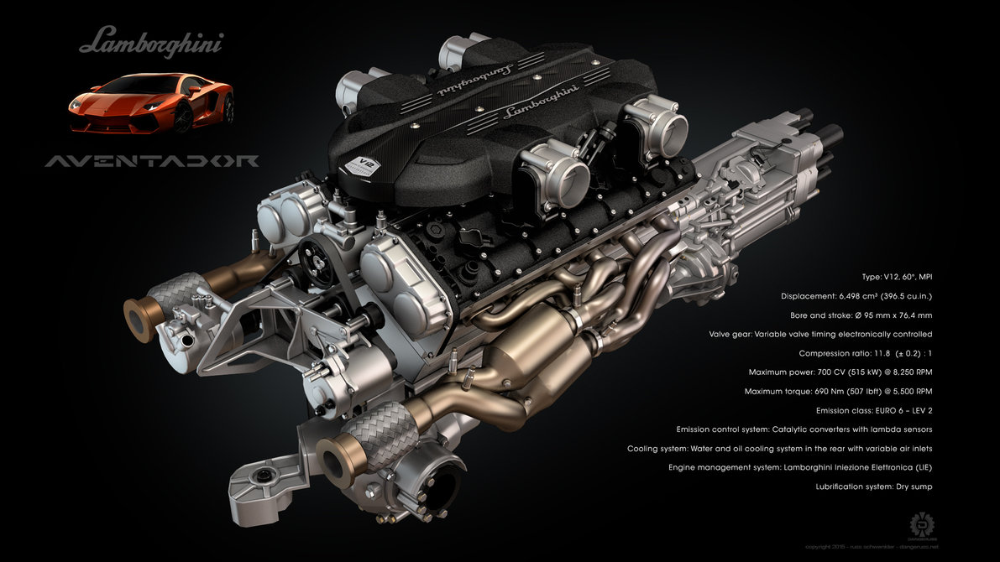
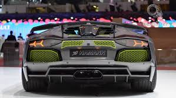

LOGO DESCRIPTION
The Lamborghini logo symbolizes the founder’s zodiac character – the Taurus or a bull.Ferruccio’s love of bullfights was depicted in the logo and Lamborghini cars get their styles from famous bulls.The golden bull ready for bullfights is depicted on the black shield with the golden title “Lamborghini” above.The bull represents Lamborghini sports cars’ power.The shape of the Lamborghini symbol depicts a shield and demonstrates golden snorting bull.The emblem was symbolical like any other car logos.This bull represents consistency, fortitude and power.Being a manufacturer of high-quality sporting cars,the logo has immense recognition deeply along with other brand logos. The bull symbol actually signs founder’s,Ferruccio, zodiacal sign (Taurus), besides; it is obviously attended by the manufacturer’s title, Lamborghini.Contrary to some other “patriot” Italian manufacturers, Lamborghini does not apply the Italian colors on its symbol.The famous golden Taurus with a black field of the Lamborgini symbol holds great similarity to the horse and yellow field of the Ferrari symbol.The similarity was not just a coincidence, since Ferruccio has a longstanding rivalry with Ferrari.Since the golden bull in the Lamborghini symbol depicts excellence and wealthy tradition of the manufacturer, the black color reflects its power, prestige, elegance and integrity.

V12 ENGINE
Lamborghini V12 Bizzarrini Lamborghini Dallara.jpg From left to right: Giotto Bizzarrini, Ferruccio Lamborghini and Gian Paolo Dallara at Sant'Agata Bolognese in 1963, with a Lamborghini V12 engine prototype. Output Power output 3.5: 273.7 PS (201.3 kW; 270.0 bhp) 6.2: 580 PS (427 kW; 572 bhp) @ 7,500 rpm 6.5: 640 PS (471 kW; 631 bhp) @ 7,500 rpm Specific power 3.5: 79 PS (58.1 kW; 77.9 bhp) per litre 6.2: 94.4 PS (69.4 kW; 93.1 bhp) per litre 6.5: 98.6 PS (72.5 kW; 97.3 bhp) per litre Torque output 6.2: 650 N⋅m (479 lbf⋅ft) @ 5,500 rpm 6.5: 660 N⋅m (487 lbf⋅ft) @ 5,200 rpm Dimensions Dry weight 253 kg (6.5 litres) Chronology Successor Lamborghini V12 L539 The Lamborghini V12 refers to the flagship V12 engine used by Lamborghini. Lamborghini has had two generations of V12 engines through their history, both of which were developed in-house. The first-generation Lamborghini V12 was a sixty degree (60°) V12 petrol engine designed by Lamborghini,and was the first internal combustion engine ever produced by the firm. It first entered production in 1963 as a 3.5 litre displacing 3,465 cubic centimetres (211.4 cu in) fitted on Lamborghini's first car, the Lamborghini 350GT.The engine remained in use for almost fifty years, the final version of 6.5 litre displacement was installed in the Lamborghini Murciélago. Lamborghini discontinued their first-generation V12 after the Murcielago, opting for a brand-new V12 that first use on the Lamborghini Aventador.
